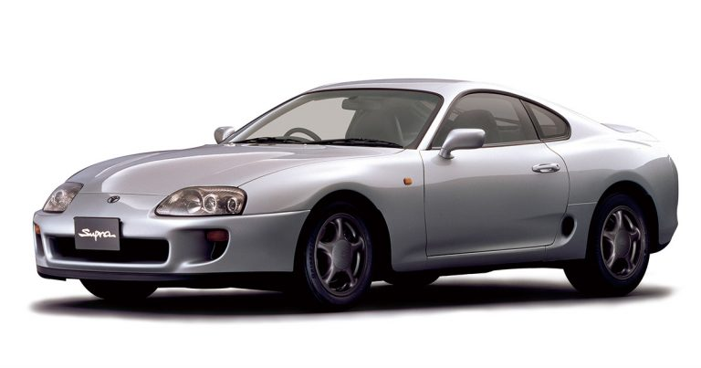
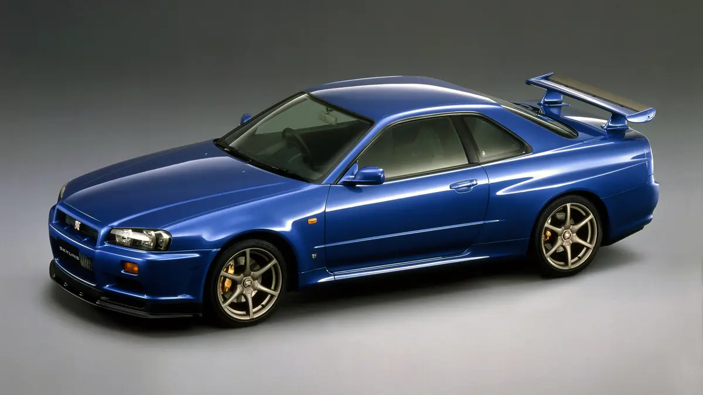
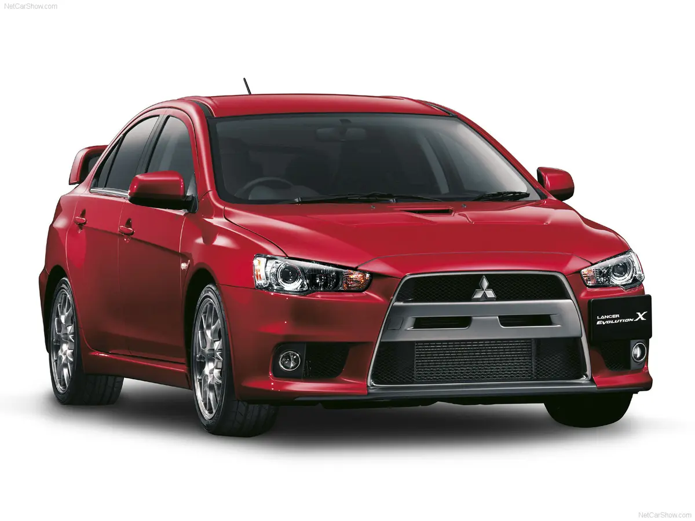
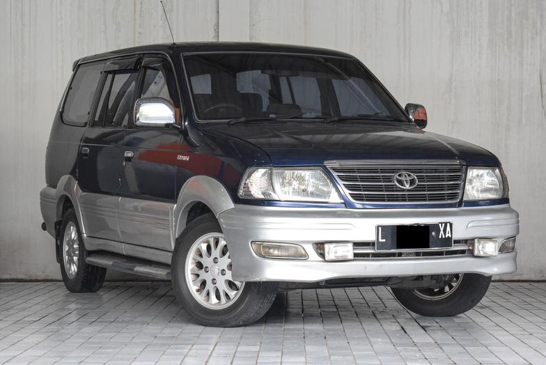
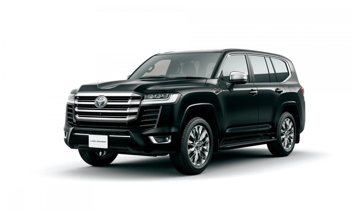

REKOMENDASI MOBIL BEKAS
SUPRA MK4
$15,000

Spesifikasi SUPRA MK4
-
Jenis Mesin: Mesin 2JZ-GTE, inline-six silinder, twin-turbocharged.
- Kapasitas Mesin: 3.0 liter.
- Manual: 6-speed manual transmission.
- Otomatis: 4-speed automatic transmission.
- Tipe Penggerak: Rear-wheel drive (RWD).
-
Suspensi: Suspensi independen dengan peredam MacPherson di depan dan
suspensi independen dengan peredam double wishbone di belakang.
NISSAN SKYLINE R34
$20,000

Spesifikasi NISSAN SKYLINE R34
-
RB25DET: Inline-six silinder, 2.5 liter, mesin turbocharged dengan
tenaga berkisar antara 247 hingga 276 tenaga kuda
-
Manual: 5-speed manual atau 6-speed manual, tergantung pada model.
- Otomatis: 4-speed automatic.
-
All-wheel drive (AWD) pada model GT-R, sementara varian lainnya memiliki
rear-wheel drive (RWD).
-
Berat Kosong: Berkisar antara 1.400 hingga 1.600 kg tergantung pada
konfigurasi.
MITSUBISHI EVO 10
$25,000

Spesifikasi MITSUBISHI EVO 10
- Engine 2.0 L (1,998 cc) 4B11T I4-T (petrol)
- Power output 280–446 PS (276–440 bhp; 206–328 kW)
-
Transmission 5-speed manual 6-speed TC-SST dual-clutch transmission
- Curb weight 1,420–1,650 kg (3,131–3,638 lb)
KIJANG KRISTA
$5,000

Spesifikasi KIJANG KRISTA
-
Mesin: Mesin bensin 4-silinder segaris dengan sistem injeksi bahan
bakar.
-
Kapasitas Mesin: Berkisar antara 1.8 hingga 2.0 liter, tergantung pada
varian dan tahun produksi.
-
Tenaga: Tenaga berkisar tergantung pada varian dan tahun produksi,
tetapi umumnya sekitar 100 hingga 130 tenaga kuda.
-
Transmisi: Biasanya hadir dengan transmisi manual 5-speed atau otomatis
4-speed, tergantung pada varian dan tahun produksi.
-
Kapasitas Penumpang: Kijang Krista biasanya dapat mengangkut 7-8
penumpang tergantung pada konfigurasi kursi.
TOYOTA LAND CRUISER
$10,000

Spesifikasi TOYOTA LAND CRUISER
- Jenis Bahan Bakar Diesel
- Tenaga 301 hp
- RPM At Max Power 4000 RPM
- Kapasitas mesin 3346 cc
- Torsi 700 Nm
- RPM At Max Torque 1600-2600 RPM